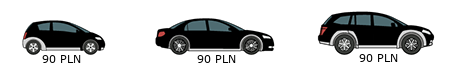
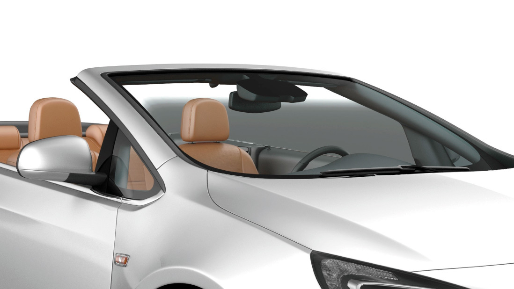
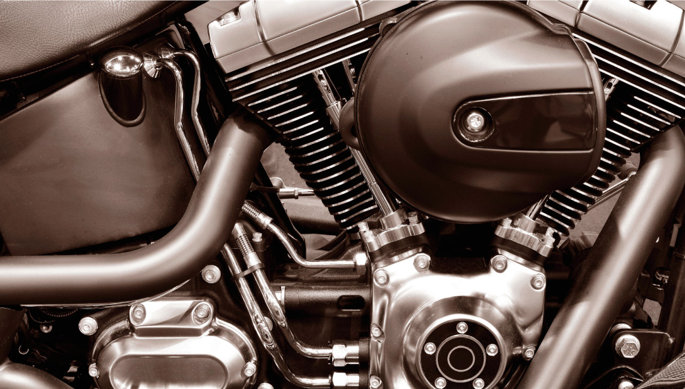
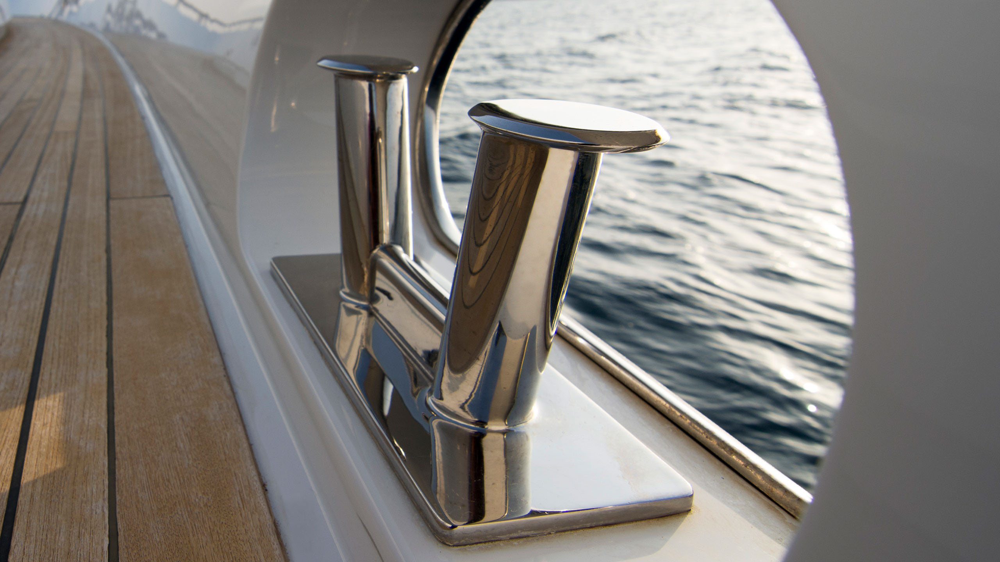

OFERTA
DZIĘKI NASZYM USŁUGOM ODKRYJESZ NA NOWO WŁASNY SAMOCHÓD.
OFERUJEMY RENOWACJĘ ORAZ PIELĘGNACJĘ
(PODANE CENY SĄ CENAMI NETTO):
- LAKIERU
- WNĘTRZA
- ELEMENTÓW
- INNYCH OBIEKTÓW
- USŁUGI DODATKOWE
RENOWACJA LAKIERU-POLEROWANIE
ODŚWIEŻANIE MECHANICZNE LAKIERU – 1 – ETAPOWA KOREKTA LAKIERU – USUNIĘCIE OKOŁO 40-50% ZARYSOWAŃ.
RENOWACJA MECHANICZNA LAKIERU GOLD – 2 – ETAPOWA KOREKTA LAKIERU – USUNIĘCIE OKOŁO 60-70% ZARYSOWAŃ.
RENOWACJA MECHANICZNA LAKIERU ULTRA – 4 – ETAPOWA KOREKTA LAKIERU – USUNIĘCIE OKOŁO 80-90% ZARYSOWAŃ.
POLEROWANIE KLOSZY LAMP + ZABEZPIECZENIE CERAMICZNE.
CERAMICZNE ZABEZPIECZENIA LAKIERU
MEMBRAMOWA POWŁOKA CERAMICZNA FX PROTECT GLASS COATING S-4H
Powłoka ceramiczna GLASS COATING S-4H to innowacyjne rozwiązanie w dziedzinie zabezpieczenia struktury lakierniczej samochodu. Dzięki unikalnej zawartości nanocząsteczek, w znakomity sposób chroni lakier podczas codziennego użytkowania przed zarysowaniami, promieniowaniem UV, warunkami atmosferycznymi a także szkodliwym wpływem agresywnej chemii. Chroni lakier przez 2 lata.
Ceny aplikacji powłok ceramicznych dotyczą nowych aut bez usługi polerowania.
POWŁOKA CERAMICZNA FX PROTECT BASE + FINISH
FX Protect Base + Finish to dwuskładnikowa powłoka ceramiczna chroniąca lakier przed czynnikami atmosferycznymi i zwiększająca odporność na zarysowania i odpryski lakieru. Trwałość 4 lata.
Ceny aplikacji powłok ceramicznych dotyczą nowych aut bez usługi polerowania.
ZABEZPIECZENIE LAKIERU – NANO CERAMIC PROTECT CERAMIC WAX
ZABEZPIECZENIE LAKIERU – NANO CERAMIC PROTECT SOFT – 12 MIESIĘCZNA GWARANCJA
ZABEZPIECZENIE LAKIERU – NANO CERAMIC PROTECT HARD 9H – 3 LATA GWARANCJI (PISEMNA GWARANCJA)
Ceny aplikacji powłok ceramicznych dotyczą nowych aut bez usługi polerowania.
ZABEZPIECZENIE LAKIERU – NANO CERAMIC PROTECT HARD 9H – 5 LAT GWARANCJI (PISEMNA GWARANCJA)
Ceny aplikacji powłok ceramicznych dotyczą nowych aut bez usługi polerowania.
KONSERWACJA POWŁOK CERAMICZNYCH
ROCZNA KONSERWACJA CERAMICZNEJ POWŁOKI LAKIERU – NANO CERAMIC PROTECT HARD 9H.
ROCZNA KONSERWACJA CERAMICZNEJ POWŁOKI LAKIERU – FX PROTECT.
PIELĘGNACJA WNĘTRZA
PRANIE TAPICERKI MATERIAŁOWEJ, ALCANTARY I CZYSZCZENIE TAPICERKI SKÓRZANEJ, KOMPLEKSOWE CZYSZCZENIE WNĘTRZA
Ceny mogą ulec zmianie w zależności od stopnia zabrudzenia i liczby siedzeń.
IMPREGNACJA TAPICERKI SKÓRZANEJ – EFEKT MATOWEJ, NATURALNEJ SKÓRY, REGENERACJA, WODOODPORNA POWŁOKA.
PIELĘGNACJA WNĘTRZA TWORZYW SZTUCZNYCH
IMPREGNACJA TAPICERKI MATERIAŁOWEJ, DYWANIKÓW I ALCANTARY – NANO CERAMIC PROTECT FABRIC – HYDROFOBIZACJA – WODOODPORNA POWŁOKA.
IMPREGNACJA TAPICERKI SKÓRZANEJ – NANO CERAMIC PROTECT LEATHER – EFEKT MATOWEJ, NATURALNEJ SKÓRY,REGENERACJA, WODOODPORNA POWŁOKA.
ZABEZPIECZENIE ELEMENTÓW – PLASTIKOWYCH, WINYLOWYCH, GUMOWYCH, OPON – NANO CERAMIC PROTECT PLASTIC – HYDROFOBIZACJA – WODOODPORNA POWŁOKA.
SZYBY
„NIEWIDZIALNA WYCIERACZKA” – HYDROFOBIZACJA PRZEDNICH SZYB I LUSTEREK.
„NIEWIDZIALNA WYCIERACZKA” – NANO CERAMIC PROTECT GLASS – HYDROFOBIZACJA PRZEDNICH SZYB I LUSTEREK.
FELGI - CZYSZCZENIE,CERAMICZNE ZABEZPIECZEŃ
CZYSZCZENIE MOCNO ZABRUDZONYCH FELG OD WEWNĄTRZ, WNĘTRZ NADKOLI – ŚCIĄGANIE KÓŁ ZABEZPIECZENIE FELG – NANO CERAMIC PROTECT HARD 9H, REWITALIZACJA KOLORU OPON.
CZYSZCZENIE MOCNO ZABRUDZONYCH FELG OD WEWNĄTRZ, WNĘTRZ NADKOLI – ŚCIĄGANIE KÓŁ ZABEZPIECZENIE FELG – NANO CERAMIC PROTECT SOFT, REWITALIZACJA KOLORU OPON.
CZYSZCZENIE MOCNO ZABRUDZONYCH FELG OD WEWNĄTRZ, WNĘTRZ NADKOLI – ŚCIĄGANIE KÓŁ ZABEZPIECZENIE FELG – FX PROTECT WHEEL ARMOUR.
WHEEL ARMOUR B-1 to powłoka ceramiczna klasy premium przeznaczona do zabezpieczania powierzchni felg aluminiowych, chromowanych, polerowanych, lakierowanych.
Efekt działania powłoki ceramicznej WHEEL ARMOUR B-1 utrzymuje się 12 miesięcy.
KABRIO
CZYSZCZENIE, PRANIE DACHU CABRIO, IMPREGNACJA – HYDROFOBIZACJA – WODOODPORNA POWŁOKA
OD 350 PLN
MOTOCYKLE
MOTOCYKLE PODLEGAJĄ INDYWIDUALNYM WYCENOM W ZALEŻNOŚCI OD ICH WIELKOŚCI. MOŻLIWOŚĆ WYKONANIA WSZYSTKICH USŁUG DOSTĘPNYCH W NASZEJ OFERCIE.CENY USTALANE INDYWIDUALNIE, MOŻLIWE WYKONANIE MOBILNEJ USŁUGI Z DOJAZDEM DO KLIENTA.
ŁODZIE I SAMOLOTY
ŁODZIE I SAMOLOTY PODLEGAJĄ INDYWIDUALNYM WYCENOM W ZALEŻNOŚCI OD ICH WIELKOŚCI. MOŻLIWOŚĆ WYKONANIA WSZYSTKICH USŁUG DOSTĘPNYCH W NASZEJ OFERCIE. PREPARATY DIAMONDBRITE POSIADAJĄ CERTYFIKATY MORSKIE I LOTNICZE POZWALAJĄCE NA PRACĘ W NAJBARDZIEJ SUROWYCH WARUNKACH. CENY USTALANE INDYWIDUALNIE, MOŻLIWE WYKONANIE MOBILNEJ USŁUGI Z DOJAZDEM DO KLIENTA.
USŁUGI DODATKOWE
CZYSZCZENIE I ZABEZPIECZENIE ELEMENTÓW PLASTIKOWYCH SILNIKA.
MYCIE DETAILINGOWE AFTER CARE – OKRESOWY PRZEGLĄD GWARANCYJNY.
OZONOWANIE
Dezynfekcja oraz usunięcie zapachów z układu klimatyzacji oraz wnętrza pojazdu.

PRZYGOTOWANIE AUTA DO SPRZEDAŻY
USŁUGA POLEGAJĄCA NA KOMPLEKSOWYM PRZYGOTOWANIU SAMOCHODU DO SPRZEDAŻY I ZWIĘKSZENIU JEGO WARTOŚCI RYNKOWEJ, POPRZEZ PAKIET ODŚWIEŻAJĄCY LAKIER I WNĘTRZE.
Ceny mogą ulec zmianie w zależności od stopnia zabrudzenia i liczby siedzeń.